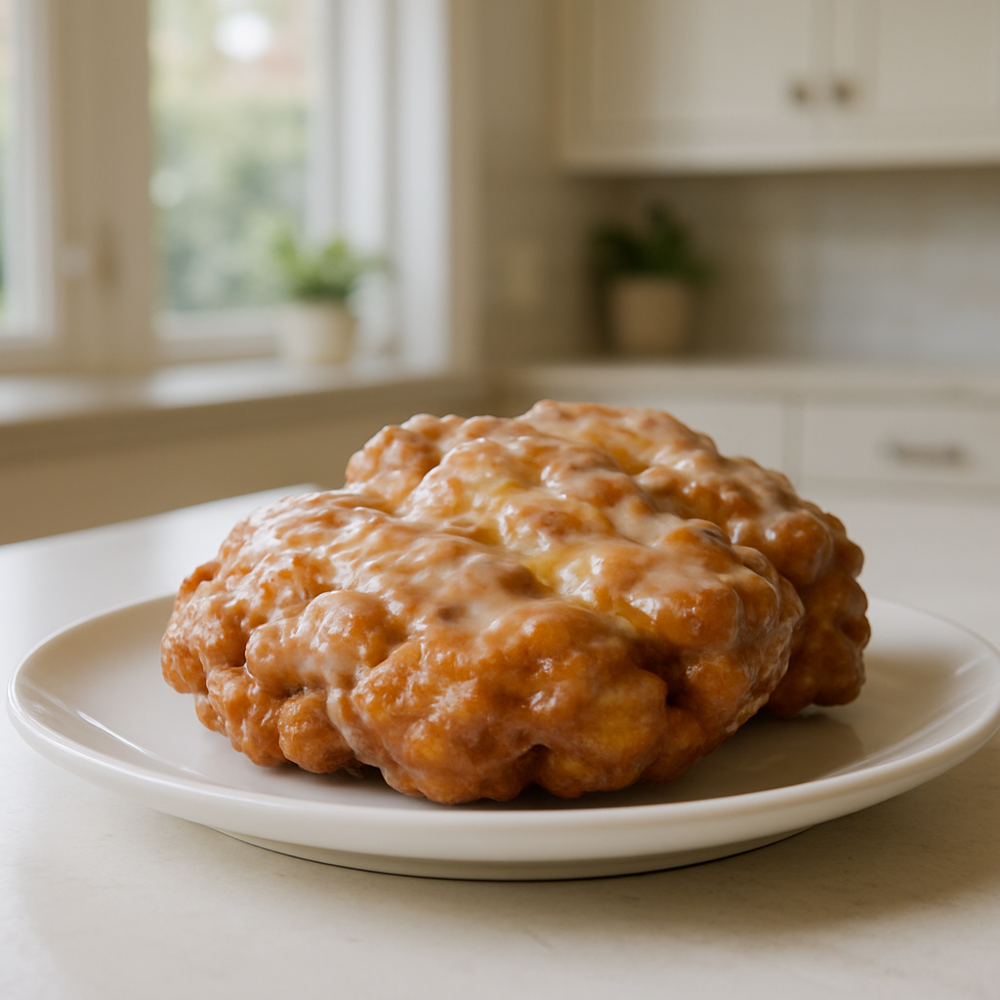

Apple Fritter Recipe
Home

Description
Apple Fritters are luscious deep-fried donuts filled with apples and cinnamon and drizzled with an easy three-ingredient glaze. You can have these scrumptious warm apple fritters in your hands in less than thirty minutes. Make sure you stash a couple for yourself, or you might blink your eyes, and they will be gone!
- 1 1/2 cups all purpose flour
- 1/4 cup sugar
- 2 teaspoons baking powder
-
- 1/2 teaspoon salt
- 1 1/2 teaspoons cinnamon
- 1/3 cup milk
- 2 eggs
- 3 tablespoons applesauce
- 2 large Granny Smith apples or Honey Crisp apples peeled, cored, and diced
- Canola Oil or Vegetable Oil for frying
Glaze
- 2 cups powdered sugar
- 1/4 cup milk
- 1/2 teaspoon vanilla extract